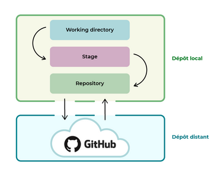

Envie d'apprendre à utiliser Git et GitHub, pas de soucis :D :
Git : Le gestionnaire de versions
Un gestionnaire de versions est un programme qui permet aux développeurs de conserver un historique des modifications et des versions de tous leurs fichiers, on appelle aussi cela le versionning.
Le gestionnaire de versions permet de garder en mémoire :
- Chaque modification de chaque fichier
- Pourquoi elle a eu lieu
- Et par qui
Si on travaille seul, on pourra donc garder l'historique de nos modifications ou revenir à une version précédente facilement.
Dans le cas où on travaille en équipe, le gestionnaire de version fusionne les modifications des personnes qui travaillent simultanément sur un même fichier, grâce à cela on ne risque plus de voir son travail supprimé par erreur.
Git est le système de contrôle de versions le plus utilisé aujourd'hui, c'est un programme qui a une structure décentralisée.
Cela signifie que l'historique complet du code n'est pas conservé dans un emplacement unique, chaque copie du code effectué correspond à un nouveau dépôt dans lequel est conservé l'historique des modifications.
Git et GitHub sont deux choses différentes :
- Git : C'est un gestionnaire de versions, on l'utilise pour créer un dépôt local et gérer les versions de nos fichiers.
- GitHub : C'est un service en ligne, il va héberger notre dépôt, dans ce cas, on parle de dépôt distant puisqu'il n'est pas stocké sur notre machine.
Différence entre dépôt local et dépôt distant
Un dépôt local est un entrepôt virtuel de notre projet, il nous permet d'enregistrer les versions de notre code et d'y accéder au besoin.
Le dépôt distant est un peu différent, il permet de stocker les différentes versions de notre code afin de garder un historique délocalisé, c'est-à-dire un historique hébergé sur Internet ou sur un réseau.
On peut avoir plusieurs dépôts distants avec des droits différents (lecture seule, écriture, etc).
Cela est très pratique, par exemple si notre PC rend l'âme, alors on aura quand même accès à nos programmes sur ce dépôt distant.
Il est conseillé de toujours commencer par copier nos sources sur un dépôt distant lorsqu'on commence un nouveau projet.
Ce dernier peut aussi être rendu public pour que d'autre y ajoute des évolutions si besoin.
Il est nécessaire de créer une copie locale, en effet le dépôt local est un clone du dépôt distant et c'est sur ce dépôt local qu'on fera toutes les modifications de code.
Plusieurs plateformes possibles
Il existe plusieurs outils intéressants pour héberger son code, voici une petite liste :
- GitHub : C'est un outil de communication et de collaboration entre plusieurs développeurs (ou toute autre personne qui écrit du texte), c'est une interface web créée pour faciliter l'interaction avec Git.
L'avantage de GitHub, c'est que depuis quelques années, il est devenu le book/portfolio des développeurs.
Dans beaucoup de processus de recrutement, on nous demande maintenant notre lien GitHub.
Il permet de mettre en avant la qualité de son code.
GitHub est considéré comme un véritable réseau social, et permet de contribuer à des projets open source.
Il fonctionne par abonnement, mais il y a un abonnement gratuit qui est déjà très bien. - GitLab : Principale alternative à GitHub depuis le rachat de GitHub par Microsoft ..
GitLab propose une version gratuite hebergée par ses soins ou sur nos propres serveurs.
Il existe aussi des versions payantes avec plus d'options. - Bitbucket : Version de Atlassian, elle conviendra aussi bien aux étudiants ou petites équipes qu'aux grands groupes.
Une version gratuite est disponible.
Démarrer un projet sous GitHub
GitHub est donc un service en ligne qui permet d'héberger nos dépôts distants.
Pour démarrer un projet, on doit tout d'abord créer son compte GitHub, on pourra y suivre nos différents projets grâce au tableau de bord (overview) ainsi que créer un repository (cela permet de mettre son projet sur GitHub).
Pour créer un compte GitHub il suffit d'aller sur la page d'accueil (https://github.com/) et de cliquer sur Sign up.
De mon côté je viens de créer un compte antoine.giraud@free.fr, rattaché à ma boîte mail sur imp(en migration vers zimbra actuellement).
Petite présentation de GitHub :
- Overview : Permet de consulter son tableau de bord personnel pour :
- Suivre les problèmes et extraire les demandes sur lesquelles on travaille ou que l'on suit.
- Accéder à ses principaux repositories et pages d'équipe.
- Rester à jour sur les activités récentes des organisations et des repositories auxquels on s'est abonné.
- Repositories : Emplacement où on peut créer et retrouver ses dépôts existants.
- Projects : Où l'on peut créer un nouveau projet en cliquant sur "New project".
- Pulls : Permet de faire des demandes de modifications réalisées sur le code; Ce sont des demandes de pull permettant d'informer les autres utilisateurs des modifications qu'on l'on a appliquées à une branche repository sur GitHub, et qu'on veut fusionner avec le code principal.
- Explore : C'est ici qu'on trouve de nouveaux projets open source sur lesquels travailler, en parcourant les projets recommandés, en se connectant à la communauté GitHub et en recherchant des repositories par sujet ou par libellé.
Créer son propre dépôt
Pour mettre son projet sur GitHub on doit créer un repository (dépôt en français) dans lequel il pourra être installé.
Pour cela il suffit :
- D'aller dans le "+" en haut à droite et de cliquer sur "New repository"
- De choisir un nom simple pour le dépôt, comme "DeveloppementWeb"
- De choisir si on le met en public ou non (partagé ou non avec d'autres)
- De choisir si on souhaite ajouter un fichier README : README est un fichier qui indique les informations clés du projet, c'est à dire la description, l'environnement à utiliser, les dépendances possibles et les droits d'auteurs; C'est un peu comme le mode d'emploi de son projet.
- Choisir si on veut un .gitignore : C'est un fichier qui permet d'ignorer certains fichiers de son projet Git
Démarrer avec Git
- Dans un premier temps il faut installer Git (via la logithèque sous la Mint par exemple, ou sur le site https://git-scm.com/download/)
On peut également installer gitg en supplément sur Linux, qui permet d'avoir une interface graphique (ou encore NetBeans qui semble nettement mieux !) - Ensuite il faut créer un dépôt local, c'est-à-dire un dossier dans lequel toutes nos modifications seront enregistrées, on appelle cela initialiser un dépôt Git
- Puis on doit configurer son identité :
Pour cela on commence par renseigner son nom et son adresse mail, information importante car on en aura besoin pour toutes nos modifications dans Git :
git config --global user.name "Antoine Giraud
git config --global user.email antoine.giraud@free.fr
Pour vérifier que les paramètres ont bien été pris en compte, taper la commande :git config –list
- Avant dernière chose, on doit configurer les couleurs pour plus de lisibilité des différentes branches :
git config --global color.diff auto
git config --global color.status auto
git config --global color.branch auto
- Enfin, on doit configurer l'éditeur :
Par défaut, Git utilise Vim comme éditeur et Vimdiff comme outil de merge.
L'outil de merge permet de fusionner deux parties distinctes d'un projet.
On peut les modifier en tapant :
git config --global core.editor xed
git config --global merge.tool xed
Créer le dépôt local
Maintenant que l'on a configuré les paramètres de base, on va pouvoir créer le dépôt local.
Pour ce faire, deux solutions sont possibles :
- Créer un dépôt local vide pour accueillir un nouveau projet
- Cloner un dépôt distant, c'est-à-dire rapatrier l'historique d'un dépôt distant en local
On va choisir la première solution car on a aucun dépôt distant à cloner pour le moment.
On va donc initialiser son dépôt en créant un dépôt local vide
Première étape, créer un dossier sur l'ordinateur (moi j'ai créé le dossier suivant : /data/Autre/Développement Web/) puis au choix :
git init
À cette étape un dossier caché .git a été créé.Ce dossier caché contient d'ailleurs tous les éléments non visibles de Git : La configuration, les "logs", les branches, etc..
Travailler depuis le dépôt local Git

Ce schéma représente le fonctionnement de Git, il est composé de 3 zones qui forment le dépôt local, et du dépôt distant GitHub.
Zones du dépôt local :
- Le Working directory : Cette zone correspond au dossier du projet sur l'ordinateur, c'est à dire le dépôt que l'on vient de créer.
- Le Stage ou index : Zone intermédiaire entre le working directory et le repository, elle représente tous les fichiers modifiés que l'on souhaite voir apparaître dans notre prochaine version de code.
- Le Repository : Lorsque l'on crée de nouvelles versions d'un projet, c'est dans cette zone qu'elles sont stockées.
Ces 3 zones sont donc présentes dans notre ordinateur, en local.
En-dessous, on trouve le repository GitHub, c'est-à-dire notre dépôt distant :
Imaginons un projet composé de 3 fichiers : fichier1, fichier2 et fichier3.
Nous faisons une modification sur fichier1, puis une modification sur fichier2, depuis le working directory; Nous avons maintenant une version évoluée de notre projet.
Nous aimerions sauvegarder cette version grâce à Git, c'est-à-dire la stocker dans le repository.
Une fois les fichiers indexés, nous pouvons créer une nouvelle version de notre projet.
Le terme stage est aussi beaucoup utilisé par les développeurs à la place du terme index; On peut dire indexer un fichier ou stage un fichier.
Depuis le 1er octobre 2020, tous les nouveaux dépôts créés sur GitHub sont appelés "main", au lieu de "master" comme c'était le cas historiquement.
Ce changement de terme a été opéré par la société GitHub afin d'adopter des références plus inclusives.
Les dépôts existants, eux, ne changent pas de nom. Nous verrons verrez donc les deux termes dans vos projets.
Si on se réfère au schéma précédent, voici donc les étapes à faire pour envoyer nos fichiers (par exemple index.html et style.css) au dépôt distant :
- Passer les fichiers vers l'index avec la commande git add suivie des noms de fichiers :
git add index.html styles.css
- Créer une nouvelle version (c'est à dire, archiver le projet en l'état) avec la commande git commit :
git commit -m "Ajout des fichiers html et css de base"
-m (comme message) est ce qu'on appelle un argument, qui est ajouté à la commande principale.
Ici -m permet de définir un message particulier rattaché au commit effectué.
Si on n'utilise pas cet argument, la commande git commit ouvrira un éditeur de texte dans lequel on pourra saisir le message de commit.
La description est très importante pour retrouver le fil de nos commits, et revenir sur un commit en particulier. - Envoyer notre commit sur le dépôt distant (pusher) avec la commande git push.
Mais avant de faire cette commande, notre premier push va vous demander un peu de configuration.
Pour commencer, on va devoir "relier" notre dépôt local au dépôt distant que l'on a créé sur GitHub précédemment; Pour cela :
- Aller sur GitHub
- Cliquer sur la petite image en haut à droite
- Cliquer sur "Your repositories"
- Cliquer sur le repository créé précédemment
- Copier le lien qui figure sur l'écran ou dans les options et retourner en console :
git remote add origin lien_copié
Taper la commande :git branch -M main
Ça y est ! On a relié le dépôt local au dépôt distant.
On peut donc envoyer des commits du repository vers le dépôt distant GitHub en utilisant la commande suivante :git push -u origin main
Admettons maintenant que l'on a modifié le fichier index.html en modifiant le titre via la balise h1.
On va donc refaire les 3 étapes :
- Indexer le fichier HTML modifié grâce à la commande :
git add index.html
- Créer une nouvelle version grâce à la commande :
git commit -m “Modification du titre H1”
- Envoyer la nouvelle version sur le dépôt distant grâce à la commande :
git push origin main
Comprendre le système de branches
La branche principale (main ou master) portera l'intégralité des modifications effectuées.
Le but n'est donc pas de réaliser les modifications directement sur cette branche, mais de les réaliser sur d'autres branches, et après divers tests, de les intégrer sur la branche principale.
Git va créer une branche virtuelle, mémoriser tous les changements, et seulement quand on le souhaitera, les ajouter à notre application principale.
Il va vérifier s'il n'y a pas de conflits avec d'autres fusions, et hop, le tour est joué !
Pour connaître les branches présentes dans notre projet, il faut taper la ligne de commande :
git branch
Dans un premier temps on aura que :
* main
L'étoile signifie que c'est la branche sur laquelle on se situe, et que c'est sur celle-ci qu'actuellement on réalise nos modifications.
Pour créer une branche, on utilise la commande :
git branch nom_de_la_nouvelle_branche
Pour aller de la branche main à la branche "nom_de_la_branche" on va utiliser la commande :
git checkout nom_de_la_branche_souhaitee
Si on refait un git branch, et qu'on est sur la branche "j_aime_les_fleurs" on aura donc le résultat :
* j_aime_les_fleurs
On peut donc maintenant réaliser les modifications qu'on veut sans toucher à la branche principale.
On peut aussi rebasculer sur la branche principale (main) à tout moment sans impacter les modifications de la branche j_aime_les_fleurs.
Admettons que l'on a bien avancé sur le code d'un fichier dans la branche j_aime_les_fleurs, on va donc l'intégrer à la branche principale (main) en faisant un merge. Cette commande doit s'utiliser à partir de la branche dans laquelle on veut apporter des évolutions, dans notre cas on va donc se positionner sur main :
git checkout main
Une fois qu'on est sur notre branche principale, on va fusionner la branche j_aime_les_fleurs avec celle-ci en faisant le merge :
git merge j_aime_les_fleurs
Travailler avec un dépôt distant
Récupérer un dépôt distant
Imaginons que l'on doit travailler sur un projet avec des amis.
Ces derniers ont créé le repository sur GitHub et il est temps pour nous de récupérer le code pour apporter nos modifications :
- Tout d'abord, on doit récupérer l'URL du dépôt distant : Cela se passe sur GitHub en allant sur le lien du dépôt distant (qu'on nous donne) puis cliquant sur le bouton "Code" pour copier le dépôt puis sur la section HTTPS, là on y trouvera le lien à copier
- Retourner sur la console et se placer dans le dossier du projet
- Taper la commander suivante pour copier en local un projet distant :
git clone lien_copie
- Lancer la commande :
git remote add nom_court lien_copie
nom_court représente le nom court que l'on utilisera ensuite pour appeler notre dépôt, on est libre de l'appeler comme bon nous semble mais un nom court et simple est toujours plus facile.
Cette ligne ne permet pas de copier le dépôt mais permet de dire au dépôt que l'on pointe vers le dépôt distant. En d'autres termes, git remote add permet de lire un dépôt à un nom court pour une plus grande facilité d'utilisation.
Mettre à jour le dépôt local
Imaginons que l'un des amis ait ajouté des modifications sur la branche main et que l'on souhaite les récupérer, on utilisera pour cela la commande git pull :
git pull nom_court main
git pull permet donc de dupliquer un dépôt GitHub en local.
Le pull request
Une pull request, ou demande de pull, en français, est une fonctionnalité de GitHub qui permet de demander aux propriétaires d'un repository l'autorisation de fusionner nos changements sur la branche principale ou toute autre branche sur laquelle on souhaite apporter nos modifications.
Donc si l'on crée une pull request, on doit au préalable :
- Créer une nouvelle branche
- Envoyer notre code sur cette même branche D'ailleurs, lorsque ces deux conditions sont remplies, un bandeau apparaît à l'écran pour nous suggérer de créer une pull request.
- Ajouter un commentaire pour expliquer les raisons de nos modifications. GitHub indique les modifications effectuées par un code couleur.
- Cliquer sur Create pull request pour valider la pull request
Les lignes en rouge indiquent une suppression, et les lignes vertes une addition.
Demander une relecture du code
Sur des projets d'envergure, il peut arriver que notre code ne puisse être fusionné sur la branche principale sans être relu et validé par d'autres membres du projet.
C'est ce qu'on appelle une Code Review, ou revue de code, en français.
Cela permet de prévenir les erreurs éventuelles, de discuter sur un choix, une prise de position ou même de poser des questions.
Les erreurs sur un dépôt local
Création d'une branche par erreur
Pour supprimer une branche créée par erreur, on va exécuter la commande suivante :
git branch -d brancheTest
Si on a déjà fait des modifications dans la branche que l'on souhaite supprimer, on utilisera alors la commande :
git branch -D brancheTest
La suppression de cette branche entraînera la suppression de tous les fichiers et modifications que nous n'aurons pas commités sur cette branche.
Modification de la branche principale par erreur
Il peut arriver de modifier une branche principale par erreur...
Si on a modifié notre branche principale (main ou master) avant de créer notre branche et que nous n'avons pas fait le commit, ce n'est pas bien grave.
Il vous suffit de faire une remise, ou un stash en anglais :
Allons sur notre branche principale pour modifier des fichiers. Nous pouvons à tout moment voir l'état de nos fichiers, c'est-à-dire voir les changements qui ont été indexés ou ceux qui ne l'ont pas été, avec la commande suivante :
git status
On peut voir nos fichiers modifiés mais qui n'ont pas encore été commités.
Créer un stash avec la commande suivante :
git stash
Maintenant créons notre branche "brancheCommit" :
git branch brancheCommit
Basculons sur cette dernière :
git checkout brancheCommit
Enfin, on peut appliquer le stash pour :
- Récupérer les modifications que l'on a rangées dans le stash
- Appliquer ces modifications sur notre nouvelle branche
Avec la commande :
git stash apply
Cette commande va appliquer le dernier stash qui a été fait.
Si pour une raison ou pour une autre, on a créé plusieurs stash, et que le dernier n'est pas celui que l'on souhaite appliquer, pas de panique, il est possible d'en appliquer un autre :
- En premier lieu, regardons la liste de nos stash avec la commande suivante :
git stash list
Cette commande va retourner un tableau des stash avec des identifiants comme :
stash@{0} : WIP on master : f337838 création de la branche master
Il suffira alors d'appeler la commande git stash avec l'idendifiant :
git stash apply stash@{0}
Maintenant, admettons que l'on a réalisé nos modifications et qu'en plus on a fait le commit.
Le cas est plus complexe, puisque l'on a enregistré nos modifications sur la branche principale, alors que nous ne le devions pas.<
Pour réparer cette erreur, on doit analyser nos derniers commits avec la fonction git log.
On va alors récupérer l'identifiant du commit que l'on appelle le hash.
Par défaut, git log va nous lister par ordre chronologique inversé tous nos commits réalisés.
Maintenant que nous disposons de notre identifiant, gardons-le bien de côté.
Vérifions que nous sommes sur notre branche principale et réalisons la commande suivante :
git reset --hard HEAD^
Cette ligne de commande va supprimer de la branche principale notre dernier commit.
Le HEAD^ indique que c'est bien le dernier commit que nous voulons supprimer.
L'historique sera changé, les fichiers seront supprimés.
Créons ensuite notre nouvelle branche.
git branch brancheCommit
On va basculer sur cette branche.
git checkout brancheCommit
Maintenant, on est sur la bonne branche.
Renouvelons la commande git reset, qui va appliquer ce commit sur notre nouvelle branche.
Il n'est pas nécessaire d'écrire l'identifiant en entier, seuls les 8 premiers caractères sont nécessaires.
git reset --hard ca83a6df
Message de commit erroné
Imaginons que nous venons de faire un commit et que nous avons fait une erreur dans notre message.
L'exécution de la commande git commit --amend -m "nouveau_message_a_mettre", lorsqu'aucun élément n'est encore modifié, nous permet de modifier le message du commit précédent sans modifier son instantané.
L'option -m permet de transmettre le nouveau message.
git commit --amend -m “nouveau message du commit”
On vérifie avec git log.
Oubli d'un fichier dans le dernier commit
La fonction git --amend, permet de modifier le dernier commit.
Dans un premier temps ajouter le fichier oublié :
git add FichierOublie.txt
Ensuite faire la commande :
git commit --amend --no-edit
Notre fichier a été ajouté à notre commit et grâce à la commande --no-edit, on a pas modifié le message du commit.
En bref git commit --amend permet de sélectionner le dernier commit afin d'y ajouter de nouveaux changements en attente.
On peut donc ajouter ou supprimer des changements afin de les appliquer avec commit --amend.
Si aucun changement n'est en attente, --amend nous permet de modifier le dernier message de log du commit avec -m.
Les erreurs sur un dépôt distant
Annuler son dernier commit
Il est possible d'annuler son commit public avec la commande git revert.
L'opération revert annule un commit en créant un nouveau commit.
C'est une méthode sûre pour annuler des changements, car elle ne risque pas de réécrire l'historique du commit.
git revert HEAD^
git revert sert à annuler des changements commités, tandis que git reset HEAD permet d'annuler des changements non commités.
Du coup, git reset va revenir à l'état précédent sans créer un nouveau commit, alors que git revert va créer un nouveau commit.
Toutefois, attention, git revert peut écraser nos fichiers dans notre répertoire de travail, il nous sera donc demandé de commiter nos modifications ou de les remiser.
Revenir en arrière
La commande git reset permet d'annuler les changements, elle peut être appelée de trois façons différentes avec --soft, --mixed et --hard.
- git reset notreCommitCible --hard : Cette commande permet de revenir à n'importe quel commit mais en oubliant absolument tout ce qu'il s'est passé après, il est donc important de vérifier plusieurs fois avant de la lancer car on pourrait perdre toutes nos modifications.
- git reset notreCommitCible -- mixed : Cette commande va permettre de revenir juste après notre dernier commit ou le commit spécifié sans supprimer nos modifications en cours, elle permet également, dans le cas de fichier indexés mais pas encore commités, de les désindexer.
- git reset notreCommitCible -- soft : Cette commande permet de se placer sur un commit spécifique afin de voir le code à un instant donné, ou de créer une branche partant d'un ancien commit, elle ne supprime aucun fichier, aucun commit, et ne crée pas de HEAD détaché.
Si rien n'est spécifié après git reset, par défaut il exécutera un :
git reset --mixed HEAD~
Cas d'un conflit
Nous avons avons modifié du code pour afficher le message "Une super cagnotte !" dans un fichier alors qu'était déjà en place le message "Une cagnotte".
Lorsque l'on va fusionner les deux branches, les choses ne vont donc pas très bien se passer :
git checkout main git merge ameliorationCagnotte Auto-merging cagnotte.php CONFLICT (content): merge conflict in cagnotte.php Automatic merge failed; fix conflicts and then commit the result
Git va voir que sur la même ligne on essaie de fusionner deux choses différentes.
Il ne va pas pouvoir deviner laquelle prendre, la ligne "Une cagnotte", ou bien "Une super cagnotte !" ?
Git va donc afficher un conflit sur le fichier cagnotte.php et arrêtera le processus de fusion ou merge.
Ce conflit, on va devoir le résoudre en ouvrant le fichier avec notre éditeur habituel
<<<<<<< HEAD Une cagnotte ======= Une super cagnotte ! >>>>>>> ameliorationCagnotte
Maintenant, réglons les conflits en comparant les deux lignes et en choisissant quelle modification on souhaite garder; Ici, il faut garder "Une super cagnotte !", on va donc supprimer les autres lignes et ne garder que celle-ci : Une super cagnotte !
Maintenant que nous avons résolu le conflit, il nous reste à le dire à Git :
git add cagnotte.php git commit
Git va détecter que nous avons résolu les conflits et va nous proposer un message de commit.
Nous pouvons bien entendu le modifier.
Ajout d'un mauvais fichier au commit
En cas d'ajout d'un mauvais fichier au commit, nous avons une fonction qui permet de re monter le temps : git revert, exemple :
git revert HEAD
On revient à l'état précédent mais avec un nouveau commit, ainsi on ne perd pas l'historique.
Une fois notre commit "annulé", on va pouvoir enlever notre fichier et réaliser de nouveau notre commit.
Consulter l'historique d'un projet
L'historique permet de savoir qui a contribué à quoi, de déterminer où des bugs ont été introduits, ou encore d'annuler les changements problématiques.
Pour cela, on peut utiliser la commande :
git log
Cette dernière énumère en ordre chronologique inversé les commits réalisés.
Cela signifie que les commits les plus récents apparaissent en premier.
Cette commande affiche chaque commit avec son identifiant SHA, l'auteur du commit, la date et le message du commit.
Le SHA ou Secure Hash Algorithm est un identifiant.
C'est ce grand code qui nous permettra de revenir en arrière si besoin.
Autre commande possible :
git reflog
git reflog va loguer les commits ainsi que toutes les autres actions que nous avons pu faire en local : Nos modifications de messages, nos merges, nos resets, ..
Comme git log, git reflog affiche un identifiant SHA-1 pour chaque action, il est donc très facile de revenir à une action donnée grâce au SHA.
Cette commande, c'est notre joker, elle assure notre survie en cas d'erreur.
Pour revenir à une action donnée, on prend les 8 premiers caractères de son SHA et on fait (par exemple) :
git checkout e789e7c
Également, on a la commande git blame :
git blame monFichier.php
La commande git blame permet d'examiner le contenu d'un fichier ligne par ligne et de déterminer la date à laquelle chaque ligne a été modifiée, et le nom de l'auteur des modifications.
git blame va afficher pour chaque ligne modifiée :
- Son ID
- L'auteur
- L'horodatage
- Le numéro de la ligne
- Le contenu de la ligne
Enfin, on a la commande :
git cherry-pick un_identifiant_SHA-1 un_autre_identifiant_SHA-1
Cette dernière permet de sélectionner un commit et de l'appliquer sur la branche actuelle.
En effet parfois, on ne veut pas fusionner une branche entière dans une autre, on a besoin que de choisir un ou deux commits spécifiques.
Cette commande va donc permettre de sélectionner un ou plusieurs commits grâce à leur SHA et de les migrer sur la branche principale par exemple, exemple :
git cherry-pick d356940 de966d4
Cloner un dépôt distant
Il est possible de cloner un dépôt distant que l'on aurait déjà créé sur GitHub.
Pour se faire, aller sur GitHub puis dans le repository souhaité (exemple : https://github.com/antoinegirauddev/monsitememodev)
Ensuite cliquer sur le bouton "Code" puis aller dans la partie "SSH" et copier le lien affiché (exemple : "git@github.com:antoinegirauddev/monsitememodev.git").
Puis, ouvrir une console et se placer dans le répertoire souhaité en local (exemple : "/opt/lampp/htdocs/)
Enfin taper la commande git clone suivi de la clé SSH copiée précédemment, exemple :
git clone git@github.com:antoinegirauddev/monsitememodev.git
Cela va cloner le projet distant dans ce répertoire, et donc, rappatrier/créer un dossier (nommé comme le projet distant) avec tous les fichiers qui y sont présents
Donner les permissions
Pour un travail collaboratif, il peut être nécessaire de donner les droits à la personne avec qui on travaille, pour qu'il puisse cloner le repo distant mais aussi faire ses modifications en locales et les envoyer sur le repo distant.
Pour cela, aller dans le repository (exemple : https://github.com/antoinegirauddev/monsitememodev), puis dans "Settings" et "Collaborators".
Cliquer sur "Add people", puis chercher le nom de la personne et cliquer sur "Add nomdelapersonne to this repository
Si le dépôt n'est pas autorisé à tout le monde ou "public", on pourra sélectionner les droits spécifiques à donner à la personne, c'est à dire les droits de lecture uniquement, ou bien de lecture et écriture, etc..
L'accès à distance ne fonctionne pas
Si notre accès à distance ne fonctionne pas, cela peut être dû à un problème d'authentification de notre réseau.
Pour le résoudre, il nous faut créer une paire de clés SSH.
Une clé Secure Shell, ou clé SSH, permet d'assurer une connexion sécurisée entre notre réseau et un dépôt distant sécurisé, c'est très utile quand nous avons besoin de nous authentifier sur une machine tierce, car cela nous évite d'avoir à nous identifier systématiquement.
Nous allons maintenant générer notre duo de clés SSH :
ssh-keygen -t rsa -b 4096 -C "antoine.giraud@free.fr"
Nous pouvons soit appuyer sur Entrée, soit indiquer un nom de fichier.
Un mot de passe nous est ensuite demandé.
Probablement dans le dossier /home/.ssh/ on a deux fichiers, la clé publique et la cré privée.
La clé id_rsa.txt est notre clé privée alors que la clé id_rsa.pub est notre clé publique.
Ici nous allons utiliser notre clé publique seulement.
Nous pouvons copier notre clé publique en l'ouvrant dans un éditeur de texte.
Pour l'ajouter à GitHub il faut :
- Se connecter à l'espace GitHub
- Aller dans le menu en haut à droite et cliquer sur "Settings"
- Cliquer sur "SSH and GPG keys"
- Puis cliquer sur "New SSH Key"
- Choisir un titre et coller la clé SSH